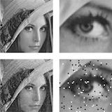

|
I am a staff research scientist at Google Research, where I work on computer vision and machine learning. At Google I've worked on Portrait Light, Lens Blur, HDR+, Jump, Portrait Mode, and Glass. I did my PhD at UC Berkeley, where I was advised by Jitendra Malik and funded by the NSF GRFP. I did my bachelors at the University of Toronto. I've received the C.V. Ramamoorthy Distinguished Research Award and the PAMI Young Researcher Award. Email / Google Scholar / Twitter / |

|
|
I'm interested in computer vision, machine learning, optimization, and image processing. Much of my research is about inferring the physical world (shape, motion, color, light, etc) from images. Representative papers are highlighted. |

|
Bogdan Smolka, Cristian Canton, Marek Szczepanski, Konrad Wojciechowski International Conference on Computer Vision and Graphics (ICCVG), Zakopane (Poland), 2002. bibtex Conductance functions used in anisotropic diffusion schemes may have relevant impact on the final result. |
|  |
Bogdan Smolka, Cristian Canton IFAC Workshop on Programable Devices and Systems, Gliwice (Poland), 2001. bibtex An old shcool image filtering technique based on the maximization of the similarities between pixels in the filtering window. |

|
Bogdan Smolka, Cristian Canton, Marko Marcevski, Zeina Torbey IFAC Workshop on Programable Devices and Systems, Gliwice (Poland), 2001. bibtex When running anisotropic diffusion filters on images, not all conduction functions were born equal. |
|
|
 |
Area Chair, ICCV 2021
Program Chair, WACV 2021 |
|
Like the style? Shamelessly borrowed from Jon Barron's site. |